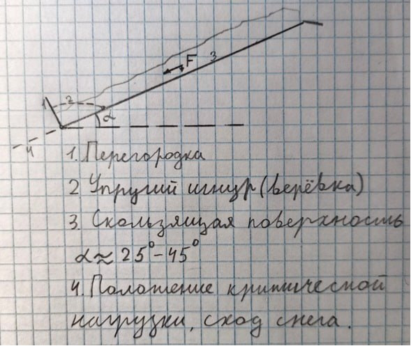
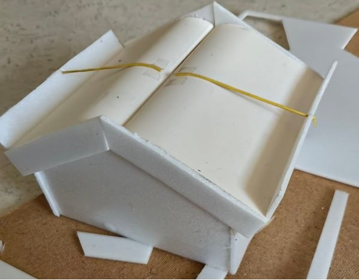

Выполнено командой Титаны Прогресса
В зимний период в северных и центральных регионах России на крышах зданий всегда образуются сосульки и наледь в связи со снегопадами и отрицательными температурами.
Образование этих ледяных масс представляет серьезную опасность для людей и транспортных средств.
Разработать способ для предотвращения образования сосулек и наледи на крышах зданий.
Текущие методы очистки крыш:
Снизу показан чертеж того, как наша идея выглядит на практике:

Макет нашего решения.

Выполнено командой Титаны Прогресса